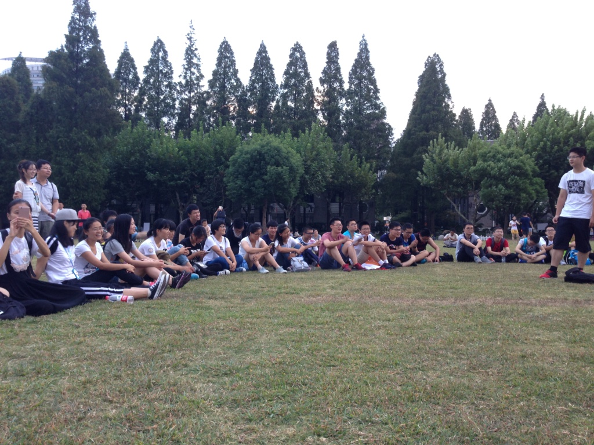

09.2019 ~
During the orientation week when I was a freshmen (08.2016), just being elected as the monitor of Class 2020 Software Engineering, me and my team decided to plan an ice-breaking activity to connect all our classmates together faster and keep the class solid.
But the problem is that it was already in the middle of the orientation of the week and we should make the event before the second week so as not to influence anyone’s classes. The time is very limited and our team has just formed for 2 days.
So our approach is to contact the event planners of some seniors in our school and get their former plans. Then we changed the rules and modes in a similar frame, we worked until 3 a.m. on that day and sent it to the seniors who gave us their plans to ask them for suggestions. We had a few conflicts at first, which was normal, due to the lack of experience. After getting some feedback, we modified the plan into version 4, and at last this first event of our class went perfectly smooth.
Description
Description
Description